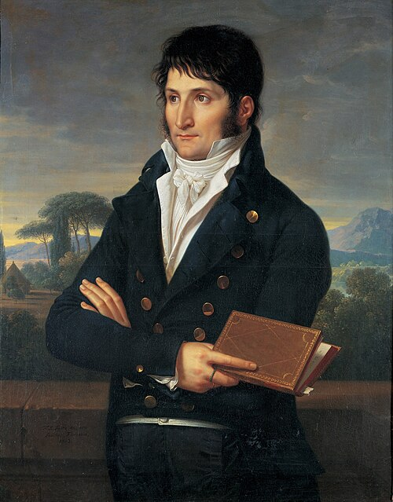
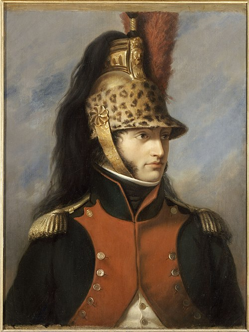
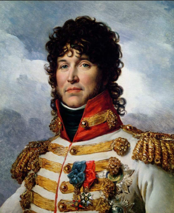
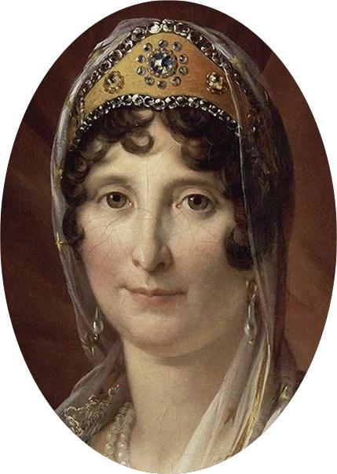
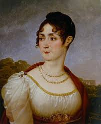
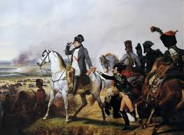

O consulado é uma representação oficial de um país em uma cidade estrangeira, geralmente importante, que não é a capital, e tem como principal função prestar assistência e proteção aos cidadãos do país que representa, que estejam residindo ou viajando na área de sua jurisdição. Ele está subordinado à embaixada e não possui funções políticas, concentrando-se em serviços consulares práticos, como emissão de passaportes, vistos, registros de nascimento, casamento e óbito, além de auxílio jurídico e assistência em casos de emergência, como repatriações e catástrofes. O consulado também atua na promoção comercial, cultural e educacional entre o país de origem e a região anfitriã.
Os consulados são geralmente encontrados em grandes cidades ou capitais regionais e sua existência é respaldada pela Convenção de Viena sobre Relações Consulares. Entre suas funções específicas, destacam-se a emissão de documentos de viagem, orientação jurídica aos cidadãos, proteção contra atos discriminatórios e garantia dos direitos humanos. Eles também possuem atribuições administrativas, como atuar como tabeliões em registros civis e intermediar processos judiciais envolvendo seus nacionais no exterior. Além disso, servem como pontos de contato com autoridades locais e outras missões diplomáticas.
O cônsul, oficial responsável pelo consulado, lidera a equipe que desempenha essas funções cotidianas e promove os interesses do país representado, atuando em relações econômicas, comerciais, culturais e educacionais na jurisdição do consulado. Ele também pode ser procurador ou representante legal dos cidadãos do seu país em processos judiciais ou administrativos no exterior. Portanto, o consulado é um importante canal de apoio e suporte oficial para os nacionais no exterior, sem exercer funções diplomáticas políticas.
Em resumo, o consulado é uma representação governamental indispensável para garantir a segurança, os direitos e os interesses dos cidadãos no exterior, além de estreitar laços culturais e comerciais com o país anfitrião.
A proclamação de Napoleão
Contexto Histórico
Após o Golpe do 18 Brumário em 1799, Napoleão consolidou o poder como Primeiro Cônsul e, com vitórias militares e apoio da burguesia, promoveu um plebiscito em 1804 que aprovou a criação do Império com cerca de 60% dos votos. Essa mudança visava perpetuar sua dinastia, centralizar o poder e romper com tradições monárquicas do Antigo Regime, escolhendo Notre-Dame em vez de Reims.
A pomposa celebração, repleta de luxo, contou com a presença do Papa Pio VII, sinalizando reconciliação com a Igreja Católica via Concordata de 1801. Em gesto simbólico de independência, Napoleão tomou a coroa das mãos do papa e se coroou, em seguida coroando sua esposa Josefina como imperatriz, perante uma elite de 500 convidados.
O evento imortalizado na pintura de Jacques-Louis David reforçou a legitimidade de Napoleão na Europa, mas gerou novas coalizões contra a França, acelerando expansões territoriais até Waterloo em 1815.
O Imperio Napoleônico
Napoleão Bonaparte, ao assumir o poder após o Golpe do 18 Brumário em 1799, inaugurou um período de profundas transformações políticas e sociais na França. Inicialmente como Primeiro Cônsul, centralizou a autoridade, pacificando um país ainda turbulento pela Revolução Francesa. Instituiu reformas administrativas, criando a figura do prefeito para controlar os departamentos, garantindo uma gestão centralizada e eficiente. A Concordata de 1801 com o Papa Pio VII representou a reconciliação com a Igreja Católica, embora a França mantivesse o controle sobre os bens da Igreja. O Código Civil, promulgado em 1804, consolidou princípios de igualdade perante a lei, proteção da propriedade privada e a autoridade do chefe de família, influenciando sistemas jurídicos pelo mundo afora. Além disso, Napoleão fortaleceu a economia com o Banco da França para estabilizar a moeda e promover o crédito, além de incentivar a indústria e o comércio com políticas protecionistas e incentivos fiscais. Contudo, o regime napoleônico também se caracterizou pelo autoritarismo, com censura rigorosa à imprensa e repressão política, gerida principalmente por Joseph Fouché, chefe da polícia.
Na política externa, Napoleão buscou expandir a influência francesa e consolidar seu poder na Europa por meio de sucessivas guerras contra variadas coalizões de potências europeias, principalmente a Grã-Bretanha, Áustria, Prússia e Rússia. Suas vitórias decisivas nas batalhas de Austerlitz, Jena e Friedland foram fundamentais para estabelecer o chamado Sistema Continental, que reunia estados aliados e controlados pela França, como o Reino de Westfália, a Confederação do Reno e o Reino da Itália. Este sistema visava isolar economicamente a Inglaterra pelo Bloqueio Continental, proibindo o comércio entre a Europa continental e os britânicos, embora seu cumprimento tenha sido difícil devido ao contrabando e resistência local. Napoleão também enfrentou grandes desafios, como a resistência nas campanhas da Península Ibérica, onde surgiram guerrilhas espanholas apoiadas pela Inglaterra, e a desastrosa invasão da Rússia em 1812, que marcou o início do declínio do seu império. A combinação das forças inimigas e o desgaste das constantes guerras levaram à sua derrota final em Waterloo e exílio.
Apesar do fim do Império Napoleônico em 1815, suas políticas internas e reformas legais consolidaram mudanças estruturais em muitos países, influenciando a organização política, jurídica e administrativa da Europa e do mundo moderno. A era napoleônica, portanto, foi marcada por um forte contraste entre modernização e autoritarismo, uma liderança carismática e militarismo, que reformulou profundamente o mapa político europeu e ajudou a disseminar ideais de nacionalismo e cidadania, mesmo sob um regime autocrático.
Os Bonapartes
Como todo prefeito de cidade do interior Napoleão Bonaparte assim que se tornou imperador da França, ele pois os seus parentes para governar certos paises europeus Como Napoles, Westifalia, Holanda e outros paises.
Ele passou esse poder principalmente para os seus irmãos que iremos conhecer cada um deles:
Jose Bonaparte
José Bonaparte (1768-1844), irmão mais velho de Napoleão, foi um diplomata e advogado francês nomeado rei de Nápoles (1806-1808) e depois da Espanha (1808-1813).
Após as abdicações de Baiona, Napoleão o impôs como José I na Espanha, em meio à Guerra da Independência Espanhola, com revoltas populares contra os franceses. Promulgou o Estatuto de Baiona para reformas liberais, mas enfrentou guerrilhas, derrotas como Bailén e Arapiles, fugindo em 1813.
Exilou-se nos EUA, Inglaterra e Itália, morrendo em Florença; sepultado em Paris ao lado de Napoleão
Luciano Bonaparte
Luciano Bonaparte (1775-1840), irmão mais novo de Napoleão, foi poeta, político e diplomata francês nascido na Córsega.
Inicialmente jacobino, presidiu o Conselho dos Quinhentos durante o Golpe do 18 Brumário (1799), ajudando Napoleão a tomar o poder, e serviu como Ministro do Interior no Consulado. Como embaixador em Madrid (1800-1801), fomentou a Guerra das Laranjas contra Portugal, levando à perda de Olivença.
Ruptura com Napoleão por recusar casamento arranjado levou ao exílio na Itália, onde se tornou Príncipe de Canino e Musignano; morreu em Viterbo.Luciano Bonaparte, irmão mais novo de Napoleão Bonaparte, teve uma relação complexa e marcada por altos e baixos com seu irmão. Inicialmente, Luciano foi um apoiador importante do golpe do 18 Brumário em 1799, que levou Napoleão ao poder, atuando como presidente do Conselho dos Quinhentos e sendo um dos arquitetos da mudança política. No início do Consulado, Luciano serviu como Ministro do Interior, desempenhando papel fundamental na consolidação do regime napoleônico.
Porém, a relação dos irmãos se deteriorou quando Napoleão tentou controlar os casamentos de sua família para fortalecer alianças políticas, incluindo a tentativa de arranjar o casamento de Luciano, o que ele recusou. Essa divergência provocou sua alienação de Napoleão e seu consequente exílio voluntário na Itália, onde recebeu os títulos de Príncipe de Canino e Musignano.
Apesar do rompimento, Luciano continuou sendo uma figura política e cultural importante, mas sua relação pessoal com Napoleão ficou marcada pela tensão e afastamento. Ele preferiu manter sua independência e não participar plenamente da dinastia napoleônica em ascensão, refletindo um contraste notável entre irmãos numa família que teve papel central na história da França e da Europa na era napoleônica.

Eugenio de Beuharnais
Eugênio de Beauharnais (1781-1824), filho de Josefina e enteado adotivo de Napoleão Bonaparte, foi um general francês, vice-rei da Itália (1805-1814) e duque de Leuchtenberg.
Após a execução de seu pai na Revolução, integrou o exército jovem, lutou em Marengo e ganhou confiança de Napoleão, que o nomeou príncipe francês (1804), vice-rei da Itália e arquichanceler do Império. Casou-se com Augusta da Baviera em 1806, tendo sete filhos, incluindo Amélia, imperatriz do Brasil.
Destacou-se militarmente em Wagram (1809) e na campanha russa (1812), resistindo à deserção até a queda napoleônica; exilou-se na Baviera, morrendo em Munique de apoplexia.
Hortense de Beuharnais
Hortênsia de Beauharnais (1783-1837) foi rainha consorte da Holanda (1806-1810) como esposa de Luís I, filha de Josefina (primeira esposa de Napoleão I) e Alexandre de Beauharnais, e mãe de Napoleão III.
da Vida
Nascida em Paris, Hortênsia perdeu o pai guilhotinado na Revolução Francesa em 1794 e foi educada em internato, tornando-se figura da corte napoleônica após o casamento da mãe com Napoleão em 1796. Casou-se em 1802 com Luís Bonaparte por ordem do imperador, apesar de outro amor oficial, e teve os primeiros filhos em Paris.
Rainha da Holanda
Acompanhou Luís à Holanda em 1806, onde tratou o clima úmido que agravou sua saúde, relações tensas com o marido ciumento e desastres como inundações, levando-a a retornar frequentemente a Paris. Em 1810, após a abdicação de Luís, resgatou o filho Napoleão Luís (rei nominal) e atuou como regente breve antes da anexação francesa.
Exílio e Morte
Após a queda de Napoleão, viveu exilado na Suíça como duquesa de Saint-Leu, manteve a liderança ao tio político, compôs músicas e perdeu dois filhos adultos. Morreu em Arenenberg, possivelmente de câncer, enterrado ao lado da mãe.
Luis Bonaparte
Luís I da Holanda (1778-1846), irmão mais novo de Napoleão Bonaparte, reinou como rei dos Países Baixos de 1806 a 1810, adotando o nome holandês Lodewijk I e buscando governar de forma independente.
da Vida
Nascido em Ajaccio, na Córsega, Luís serviu no exército francês ao lado de Napoleão no Egito e na Itália, alcançando o posto de general aos 25 anos. Casou-se em 1802 com Hortênsia de Beauharnais, filha de Josefina, por arranjo do irmão, e teve três filhos, incluindo o futuro Napoleão III.
Reinado
Nomeado rei em 1806 para bloquear o comércio britânico, Luís mudou-se para a Holanda, aprendeu a língua local, renunciou à cidadania francesa e mudou o mesmo de sua corte, gerando atritos com Napoleão e Hortênsia. Enfrentou desastres como a explosão em Leiden (1807) e inundações (1809), liderando esforços de socorro que lhe valeram o apelido de "Luís, o Bom"; mudou a capital várias vezes e resistiu às demandas napoleônicas por tropas.
Queda e Legado
Em 1810, Napoleão o depôs por priorizar interesses holandeses e anexou o reino à França; Luís exilou-se na Holanda por três anos, depois na França, dedicando-se à escrita. Visitou a Holanda em 1840 sob disfarce, recebeu com carinho pelo povo, e morreu em 1846 em Livorno.

Pauline Bonaparte
Pauline Bonaparte (1780-1825), irmã favorita de Napoleão, nasceu na Córsega e destacou-se por sua beleza e vida escandalosa.
Casou-se com o general Charles Leclerc em 1797, acompanhando-o a Saint-Domingue (Haiti), onde ele morreu de febre amarela em 1802; viúva, enviuvou o filho Dermide em 1804 e casou-se com o príncipe Camillo Borghese em 1803, vivendo luxuosamente em Paris e Roma com amantes notórios.
Napoleão a nomeou Duquesa soberana de Guastalla em 1806 (vendida logo após), mas desavenças com Maria Luísa levaram a seu afastamento da corte; leal, visitou Napoleão exilado em Elba (1814) e ofereceu joias nos Cem Dias. Morreu de câncer em Florença, sepultada em Roma.
Carolina Bonaparte
A esposa de Joaquim Murat foi Carolina Bonaparte (1782-1839), irmã mais nova de Napoleão Bonaparte, com quem se casou em janeiro de 1800, apesar da relutância inicial da mãe Letizia devido à diferença de idade.
Carolina, ambiciosa e inteligente, tornou-se rainha consorte de Nápoles (1808-1815), atuando como regente e influenciando políticas culturais, como mecenato artístico, enquanto apoiava as ambições do marido. Teve quatro filhos: Aquiles, Letícia, Luciano e Luisa Murat.
Após a execução de Murat em 1815, exilou-se na Áustria e Itália, casando-se novamente com o marechal Macdonald em 1825.
Joaquim Murat
Joaquim Murat (1767-1815), filho de um estalajadeiro francês, foi um carismático marechal de Napoleão Bonaparte e cunhado do imperador ao casar-se com sua irmã Carolina Bonaparte em 1800.
Destacou-se como líder de cavalaria nas guerras revolucionárias, ajudando Napoleão no levante de 13 Vendémiaire (1795) e nas campanhas da Itália e Egito; nomeado marechal em 1804, comandou a Guarda Imperial e brilhou em Austerlitz, Jena e Borodino. Napoleão o elevou a Grão-Duque de Berg (1806) e Rei de Nápoles (1808-1815), substituindo José Bonaparte.
A relação com Napoleão esfriou por ambições de Murat, que ignorou o Bloqueio Continental e traiu o cunhado em 1813, aliando-se à Áustria após Leipzig para salvar seu trono; proclamou apoio aos nacionalistas italianos na Declaração de Rimini (1815), mas perdeu em Tolentino e foi fuzilado em Pizzo

Jerome Bonaparte
Jerôme Bonaparte, irmão mais novo de Napoleão I, nasceu em 15 de novembro de 1784 em Ajaccio, na Córsega, e faleceu em 24 de junho de 1860 na França.
da Carreira da Carreira
Aos 14 anos, entrou na marinha francesa após estudos no colégio de Juilly e participou de missões no Caribe, incluindo uma em Saint-Domingue com o cunhado Leclerc. Em 1803, sofreu um incidente diplomático ao abandonar o Bergantín Epervier após disparar contra um navio inglês, o que gerou transferência entre França e Inglaterra. Posteriormente, casou-se secretamente com Elizabeth Patterson nos EUA, mas Napoleão anulou o matrimônio em 1805 para forçá-lo a uma união política com Catherine de Wurtemberg.
Reinado na Westfália
Em 1807, Napoleão o nomeou rei da Westfália (Jérôme-Napoléon I), um reino criado na Alemanha, onde governou até 1813, deixando o território em dificuldades financeiras. O Comandou forças militares, como na conquista da Silésia, e recebeu reconhecimento de potências europeias, incluindo o czar russo. Após a derrota na Batalha de Leipzig, perdeu o trono para os prussianos.
Exílio e Retorno
Exilado após a queda de Napoleão em 1814, refugiou-se com o sogro, rei de Wurtemberg, ganhando o título de príncipe de Montfort em 1816. Lutou em Waterloo em 1815 e, sob Luís Napoleão (seu sobrinho), retornou à França em 1847, tornando-se governador dos Invalides (1848), marechal (1850) e presidente do Senado (1852).
Elise Bonapaerte
Elisa Bonaparte, nascida Maria Ana Bonaparte em 13 de janeiro de 1777 em Ajaccio, Córsega, e falecida em 7 de agosto de 1820 em Trieste, foi irmã mais velha de Napoleão Bonaparte que sobreviveu à infância.
Família e Casamento
Filha de Carlo Maria Bonaparte e Maria Letícia Ramolino, era irmã de José, Napoleão, Lucien e outros. Casou-se em 1º de maio de 1797 com Félix Pascual Baciocchi, um nobre corso, com quem teve quatro filhos, incluindo Elisa Napoleona (1806-1869). A separação do casal foi aprovada por Napoleão, que lhe favoreceu politicamente.
Cargos Nobres
Em 18 de maio de 1804, tornou-se membro da Família Imperial Francesa com o título de Alteza Imperial. Napoleão a nomeou Princesa de Luca e Piombino em 1805 e Grã-Duquesa da Toscana em 1809, governando até 1814, quando perdeu os títulos com a restauração de Fernando III. Envolveu-se em negócios como exploração de mármore de Carrara e monopólios, acumulando fortuna apesar do seu temperamento forte.
Fim da Vida
Após a queda de Napoleão, Fugiu de Florença e Luca devido a invasões aliadas, refugiando-se em Trieste, onde morreu em reclusão. Foi a única irmã de Napoleão que morreu antes dele e está enterrada na Basílica de São Petrónio, em Bolonha.
Maria Letitia
Maria Letícia Ramolino Bonaparte (1750-1836), conhecida como Madame Mère, foi matriarca da família Bonaparte e mãe de Napoleão I, nascida em Ajaccio, na Córsega, de família nobre italiana, com quem manteve uma relação complexa de influência dominante, críticas ao luxo da corte e apoio incondicional.
Início da Vida e Relação com Napoleão
Casou-se aos 14 anos com Carlo Bonaparte, com quem teve 13 filhos, incluindo Napoleão, e participou da luta pela independência corsa contra a França em 1768-1769, mesmo grávida. Moldou o caráter austero do filho desde a infância, incentivando disciplina e estudos; Ele consultou decisões familiares, mas desaprovou seu casamento com Josefina, tentando dissuadi-lo após o fato consumado.
Ascensão, Queda e Legado Afetivo
Durante o Império, viveu na corte mas criticava excessos, recusando aprender francês fluente; Após a abdicação de 1814, abalou Napoleão ao exílio em Elba e nos Cem Dias até Malmaison, onde se viram pela última vez. Exilado em Roma sob proteção papal, recebeu notícia de sua morte em 1821 e faleceu em 1836, honrada por ele com título e pensão generosa.

Josephine Beuharnais
oséphine de Beauharnais (1763-1814) foi uma figura central na história da França no final do século XVIII e início do século XIX, conhecida principalmente por ser a primeira esposa de Napoleão Bonaparte e a primeira imperatriz dos franceses. Nascida Marie Josèphe Rose Tascher de La Pagerie em Trois-Îlets, na Martinica, Joséphine passou por uma vida marcada por transformações sociais, políticas e dramáticas pessoais.
Joséphine veio de uma família francesa da Martinica que possuía plantações de açúcar; ela se casou jovem com Alexandre de Beauharnais, militar francês que se tornou uma das vítimas da Revolução, sendo guilhotinado durante o Terror em 1794. Viúva e mãe de dois filhos, Joséphine sofreu um período difícil durante a fase radical da Revolução, enfrentando prisão e o medo constante pela sobrevivência Francesa.
Após o período revolucionário, Joséphine entrou para a alta sociedade parisiense, tornando-se uma figura influente no círculo político e social. Em 1796, casou-se com Napoleão Bonaparte, então um jovem general em ascensão, sendo um casamento que alavancou a carreira política e militar dele. Como esposa de Napoleão, ela desempenhou papéis sociais importantes e foi imperatriz durante o reinado do marido após a proclamação do Primeiro Império em 1804.
Durante seu tempo como imperatriz, Joséphine promoveu um corte elegante e influenciou a cultura, moda e arte francesa, tornando-se um ícone de estilo e refinamento. Ela foi conhecida por sua personalidade charmosa e facilidade em formar alianças que ajudaram a consolidar o poder napoleônico. No entanto, seu casamento com Napoleão sofreu muito, especialmente pela incapacidade de seus filhos, o que levou Napoleão a buscar um patrimônio em 1810 para garantir um herdeiro.
O cumprimento foi formal e respeitoso, mantendo um afeto mútuo. Joséphine continuou a viver com dignidade, recebendo um tratamento honroso e mantendo seu status social, além de receber pensões generosas. Ela dedicou seus últimos anos ao cultivo de jardins e à administração de suas propriedades. Joséphine faleceu em 1814, poucos meses antes da primeira abdicação de Napoleão, deixando um legado como uma das mulheres mais influentes de sua época
Joséphine é lembrada por seu impacto cultural e político, sua influência na vida de Napoleão e seu papel como mãe adotiva de Eugène de Beauharnais, filho do primeiro casamento, que teve importante papel no império. Seu gosto pela jardinagem deu origem ao renomado Château de Malmaison, um centro de arte e botânica. A história de Joséphine reflete as contradições e complexidades de uma mulher que viveu uma era revolucionária e imperial, marcada por poder, amor e perda.

Quarta e Quinta Coligações (1806-1809)
A Quarta Coligação formou-se em 1806 com Prússia, Rússia, Grã-Bretanha, Suécia e Saxônia contra Napoleão após Austerlitz; a Prússia declarou guerra em 9/10/1806 temendo expansão francesa, levando às vitórias em Jena-Auerstedt (14/10) onde 27 mil prussianos foram capturados, e em Friedland (14/06/1807) com 20 mil baixas russas, resultando nos Tratados de Tilsit que dividiram a Europa, reduziram Prússia a 4,5 milhões de habitantes e criaram o Grande Ducado de Varsóvia . A Quinta Coligação surgiu em abril 1809 liderada pela Áustria aproveitando a Guerra da Independência Espanhola; principais batalhas foram Aspern-Essling (21-22/05) primeira derrota napoleônica com 23 mil franceses mortos, e Wagram (5-6/07) vitória francesa com 96 mil soldados e 70 mil baixas totais, forçando Tratado de Schönbrunn que cedeu Áustria 3,5 milhões de habitantes, criou Ilíria e levou ao casamento Napoleão-Maria Luísa em 1810.

O Codigo napoleônico
O Código Napoleônico é o Código Civil Francês promulgado em 1804, que sistematizou o direito privado na França pós-Revolução e tornou-se modelo para diversos ordenamentos jurídicos no mundo, inclusive os de tradição romano-germânica na Europa e na América Latina. Ele expressa juridicamente muitos ideais da Revolução Francesa, como o fim do feudalismo e a centralidade do indivíduo proprietário.
O Código Napoleônico (Code civil des Français) foi aprovado em 1804, durante o Consulado de Napoleão Bonaparte, para unificar a legislação civil francesa, que antes era fragmentada entre costumes locais e tradições diferentes ao norte e ao sul do país. A substituição substituiu a ordem jurídica feudal, fortalecendo o Estado laico e uma lei civil única para todos os cidadãos franceses.
Entre os princípios fundamentais estão:
Legalidade e unidade da lei: a lei escrita, clara e acessível, válida para todos em todo o território, alterando costumes e privilégios regionais.
Igualdade civil: abolição de privilégios de nascimento e de ordens estamentais; todos os cidadãos passam a ser formalmente iguais perante a lei.
Liberdade individual e autonomia da vontade: ênfase na liberdade civil, na liberdade de contratar e escolher profissão, consolidando uma sociedade de contratos entre indivíduos livres.
O Código consagra a propriedade privada como direito central, quase absoluto, protegendo-a tanto contra resquícios feudais quanto contra intervenções excessivas do Estado. Essa proteção da propriedade, somada à liberdade de iniciativa e à segurança das relações contratuais, traduz os interesses e valores da burguesia e do liberalismo econômico e político da época
Na esfera da família, o Código regula o casamento, o subsídio, a filiação e a herança, apoiando a família como núcleo da ordem social, mas reforçando a autoridade masculina no lar. As mulheres foram tratadas como civilmente incapazes em vários aspectos, o que evidencia limites importantes à igualdade proclamada em outros campos
A recepção napoleônica influenciou diretamente diversos códigos civis europeus e latino-americanos, inclusive a tradição codificada que inspira o direito civil brasileiro. Essa influência deve tanto à prática clara do texto quanto à combinação entre tradição romano-canônica e princípios revolucionários de liberdade, igualdade civil e propriedade.


.jpg.png)